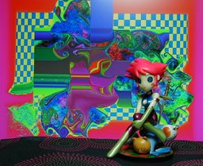
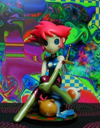

キュティーハニー アートコレクション 2B 唐沢なをき版

正面右寄り
ポートレイト風 ハピネットロビンのフィギュアックス、キュティーハニー アートコレクションの一つでマンガ家の唐沢なをき氏がデザインしたものだそうです。確かにグルグルした目は氏のものなのですが、その平面的な画風からは想像しがたい立体化です。特に買う予定はなかったのですが、フィギュア屋さんでシンプルというかシンボリックな顔立ちにポリゴン的な色彩のボディを見たとき、一目で惹かれて買ってしまいました。 背景は Winamp の MilkDrop プラグインを WinShot したものを GIMP で少し改造したものです。 更新：06/03/05 初公開：2006年03月05日 05:02:16 最新版：2006年03月05日 13:09:45 Links: ハピネットロビン: http://www.happinetrobin.com/honey/index.html MilkDrop: http://www.milkdrop.co.uk/ WinShot: http://www.woodybells.com/winshot.html GIMP: http://www.gimp.org/